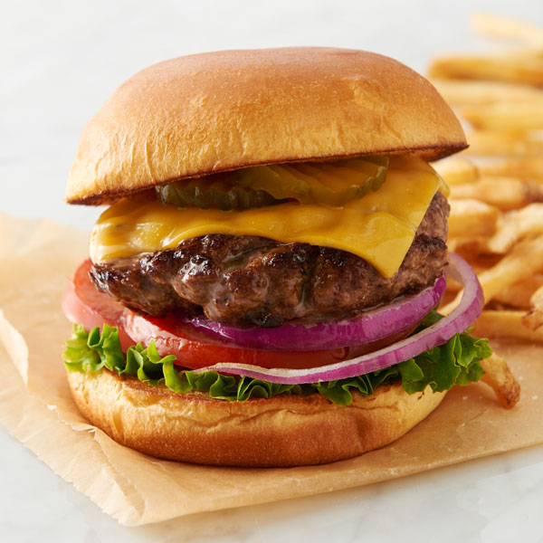

Hamburger

This is super declicious and juicy burger that is so good, that you would believe it came from a resturant. and make your
tase buds explode with flavor!
Describing the Burger
Another easy and declicious meal for you to eat. Super simple and has been around for ages. Its not super healthy
but you are not going to think about the calories as you dig into this tasty feast! Also, most kids will eat one
so don't worry abli>out your kid saying, "Mom! I want McDonalds! This food sucks!"
You want to mix ground beef with the seasonings and form it into a patty. Throw it on a pan or grill, and cook it.
Fries are optional, but honestly isn't needed because its so filling! If you want, you can grill
and lightly butter the buns for extra flavor!
Ingredients
- 1 lb ground lean beef
- 1 large egg
- 1/2 cup minced onion
- 1/4 cup fine dried bread crumbs
- 1 tablespoon Worcestershire
- 1/2 cloves garlic, peeled and minced
- 1/2 teaspoon salt
- 1/4 teaspoon pepper
- 4 Hamburger buns
- 1/4 cup mayo
- 1/4 cup ketchup
- 4 iceberg lettuce leaves
- 1 firm and ripe tomato thinly sliced
- 4 thin slices red onion
Directions
- Mix ground beef, egg, onion, breadcrumbs, Worcestershire, garlic, salt, and pepper until well blended. Divide into 4 portions and shape into a patty 4 inches wide
- Put burger patties on an oiled grill or pan on a stovetop for 4 minutes on one side, flip once, and another 4 minutes on high heat. Remove after done
- Cut buns and lay inside down into the grill or pan until lightly toasted for 30 seconds to 1 minute.
- Spread mayonnaise and ketchup on the buns, and add lettuce, tomato, the burger, onions, salt, and pepper (as much as you'd like), and put the top bun on.
- Serve!
back to main page